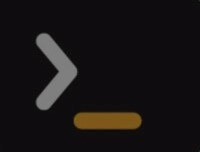

<nav class="navbar navbar-expand-lg navbar-dark rounded-bottom shadow justify-content-between p-3 border-bottom" style="grid-row: 1;">
    <div class="container-fluid">
        <a target="_blank" href="https://argentinaprograma.inti.gob.ar/" class="d-flex gap-3 align-items-center me-4 text-decoration-none" style="width: min-content;">
            
            <div class="text-white font-cinzel-decorative-bold" style="text-shadow: 0 0 0.3rem #fff;">
                Argentina Programa
            </div>
        </a>

        <ul class="navbar-nav" *ngIf="nav1">
            <li class="nav-item" *ngFor="let list of navbar">
                <a class="nav-link fs-6 gap-1 d-flex align-items-center" (click)="list?.lambda()" [routerLink]="list.routerLink" *ngIf="list.nav === 1"> <span class="material-icons">{{ list.icon }}</span>{{ list.name }} </a>
            </li>
        </ul>
        <ul class="navbar-nav ms-auto" *ngIf="nav2">
            <li class="nav-item" *ngFor="let list of navbar">
                <a class="nav-link fs-6 gap-1 d-flex align-items-center" (click)="list?.lambda()" [routerLink]="list.routerLink" *ngIf="list.nav === 2"> <span class="material-icons">{{ list.icon }}</span>{{ list.name }} </a>
            </li>
        </ul>

        <button *ngIf="btncanvas" class="btn btn-outline-light mb-2 me-2 d-grid align-items-center" (click)="openEnd(content)">
            <span class="material-icons">menu</span>
        </button>

        <ng-template #content let-offcanvas>
            <div appNoRightClick class="h-100">
                <div class="offcanvas-header">
                    <h4 class="offcanvas-title text-white-50">Menú</h4>
                    <button type="button" class="btn-close-white btn-close" aria-label="Close" (click)="offcanvas.dismiss('Cross click')"></button>
                </div>
                <div class="offcanvas-body d-grid gap-1 align-content-start">
                    <div id="navoptions" class="list-group list-group-flush gap-1" *ngFor="let list of navbar">
                        <a class="list-group-item list-group-item-action list-group-item-dark rounded d-flex align-items-center gap-2" href="#" [routerLink]="list.routerLink" (click)="closeEnd();list?.lambda()">
                            <span class="material-icons">{{ list.icon }}</span>{{ list.name }}
                        </a>
                    </div>
                </div>
            </div>
        </ng-template>
    </div>
</nav>

